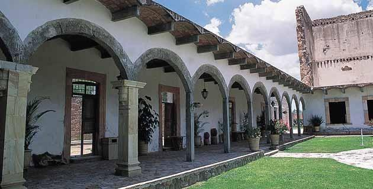
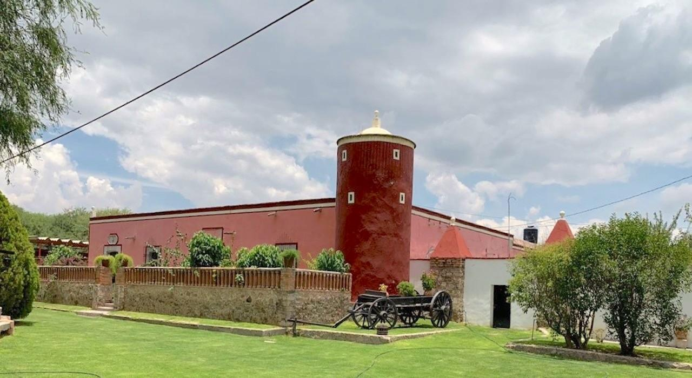

Un recorrido por la historia viva de la región.
Origen en el siglo XVIII, evolucionó hacia comunidad ejidal.

Una de las más antiguas, con raíces religiosas.
Destacó por su ganadería y toros de lidia.

Importante productora agrícola y vitivinícola.